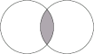

To be effective, MathML must work well with a wide variety of renderers, processors, translators and editors. This chapter raises some of the interface issues involved in generating and rendering MathML. Since MathML exists primarily to encode mathematics in Web documents, perhaps the most important interface issues relate to embedding MathML in [HTML5], and [XHTML], and in any newer HTML when it appears.
There are three kinds of interface issues that arise in embedding MathML in other XML documents. First, MathML markup must be recognized as valid embedded XML content, and not as an error. This issue could be seen primarily as a question of managing namespaces in XML [Namespaces].
Second, in the case of HTML/XHTML, MathML rendering must be integrated with browser software. Some browsers already implement MathML rendering natively, and one can expect more browsers will do so in the future. At the same time, other browsers have developed infrastructure to facilitate the rendering of MathML and other embedded XML content by third-party software or other built-in technology. Examples of this built-in technology are the sophisticated CSS rendering engines now available, and the powerful implementations of JavaScript/ECMAScript that are becoming common. Using these browser-specific mechanisms generally requires additional interface markup of some sort to activate them. In the case of CSS, there is a special restricted form of MathML3 [MathMLforCSS] that is tailored for use with CSS rendering engines that support CSS 2.1 [CSS21]. This restricted profile of MathML3 does not offer the full expressiveness of MathML3, but it provides a portable simpler form that can be rendered acceptably on the screen by modern CSS engines.
Third, other tools for generating and processing MathML must be able to communicate. A number of MathML tools have been or are being developed, including editors, translators, computer algebra systems, and other scientific software. However, since MathML expressions tend to be lengthy, and prone to error when entered by hand, special emphasis must be made to ensure that MathML can easily be generated by user-friendly conversion and authoring tools, and that these tools work together in a dependable, platform-independent, and vendor-independent way.
This chapter applies to both content and presentation markup, and describes
a particular processing model for the semantics, annotation
and annotation-xml elements described in
Section 5.1 Annotation Framework.
Within an XML document supporting namespaces [XML],
[Namespaces], the preferred method to recognize
MathML markup is by the identification of the math element
in the MathML namespace by the use of the MathML namespace
URI http://www.w3.org/1998/Math/MathML.
The MathML namespace URI is the recommended method to embed MathML within [XHTML] documents. However, some user-agents may require supplementary information to be available to allow them to invoke specific extensions to process the MathML markup.
Markup-language specifications that wish to embed MathML may require special conditions to recognize MathML markup that are independent of this recommendation. The conditions should be similar to those expressed in this recommendation, and the local names of the MathML elements should remain the same as those defined in this recommendation.
HTML does not allow arbitrary namespaces, but has built in knowledge of the MathML
namespace.
The math element and its descendants will be placed in the http://www.w3.org/1998/Math/MathML
namespace by the HTML parser, and will appear to applications as if the input had
been XHTML with the namespace declared
as in the previous section. See Section 6.4.3 Mixing MathML and HTML for detailed rules of the HTML parser's handling of MathML.
Although rendering MathML expressions often takes place in a Web browser, other MathML processing functions take place more naturally in other applications. Particularly common tasks include opening a MathML expression in an equation editor or computer algebra system. It is important therefore to specify the encoding names by which MathML fragments should be identified.
Outside of those environments where XML namespaces are recognized, media types [RFC2045], [RFC2046] should be used if possible to ensure the invocation of a MathML processor. For those environments where media types are not appropriate, such as clipboard formats on some platforms, the encoding names described in the next section should be used.
MathML contains two distinct vocabularies: one for encoding visual presentation, defined in Chapter 3 Presentation Markup, and one for encoding computational structure, defined in Chapter 4 Content Markup. Some MathML applications may import and export only one of these two vocabularies, while others may produce and consume each in a different way, and still others may process both without any distinction between the two. The following encoding names may be used to distinguish between content and presentation MathML markup when needed.
MathML-Presentation: The instance contains presentation MathML markup only.
Media Type: application/mathml-presentation+xml
Windows Clipboard Flavor: MathML Presentation
Universal Type Identifier: public.mathml.presentation
MathML-Content: The instance contains content MathML markup only.
Media Type: application/mathml-content+xml
Windows Clipboard Flavor: MathML Content
Universal Type Identifier: public.mathml.content
MathML (generic): The instance may contain presentation MathML markup, content MathML markup, or a mixture of the two.
File name extension: .mml
Media Type: application/mathml+xml
Windows Clipboard Flavor: MathML
Universal Type Identifier: public.mathml
See Appendix B Media Types Registrations for more details about each of these encoding names.
MathML 2 specified the predefined encoding values MathML,
MathML-Content, and MathML-Presentation for the
encoding attribute on the annotation-xml element.
These values may be used as an alternative to the media type for backward
compatibility. See Section 5.1.3 Alternate representations and
Section 5.1.4 Content equivalents for details.
Moreover, MathML 1.0 suggested the media-type text/mathml,
which has been superseded by [RFC3023].
MathML expressions are often exchanged between applications using the familiar copy-and-paste or drag-and-drop paradigms and are often stored in files or exchanged over the HTTP protocol. This section provides recommended ways to process MathML during these transfers.
The transfers of MathML fragments described in this section occur between the contexts of two applications by making the MathML data available in several flavors, often called media types, clipboard formats, or data flavors. These flavors are typically ordered by preference by the producing application, and are typically examined in preference order by the consuming application. The copy-and-paste paradigm allows an application to place content in a central clipboard, with one data stream per clipboard format; a consuming application negotiates by choosing to read the data of the format it prefers. The drag-and-drop paradigm allows an application to offer content by declaring the available formats; a potential recipient accepts or rejects a drop based on the list of available formats, and the drop action allows the receiving application to request the delivery of the data in one of the indicated formats. An HTTP GET transfer, as in [HTTP11], allows a client to submit a list of acceptable media types; the server then delivers the data using the one of the indicated media types. An HTTP POST transfer, as in [HTTP11], allows a client to submit data labelled with a media type that is acceptable to the server application.
Current desktop platforms offer copy-and-paste and drag-and-drop
transfers using similar architectures, but with varying naming schemes
depending on the platform. HTTP transfers are all based on media types.
This section specifies what transfer types applications should provide,
how they should be named, and how they should handle the special
semantics, annotation, and annotation-xml
elements.
To summarize the three negotiation mechanisms, the following paragraphs will describe transfer flavors, each with a name (a character string) and content (a stream of binary data), which are offered, accepted, and/or exported.
The names listed in Section 6.2.4 Names of MathML Encodings are the exact strings that should be used to identify the transfer flavors that correspond to the MathML encodings. On operating systems that allow such, an application should register their support for these flavor names (e.g. on Windows, a call to RegisterClipboardFormat, or, on the Macintosh platform, declaration of support for the universal type identifier in the application descriptor).
When transferring MathML, an application MUST ensure the content of the data transfer is a well-formed XML instance of a MathML document type. Specifically:
The instance MAY begin with an XML declaration, e.g. <?xml version="1.0">
The instance MUST contain exactly one root math element.
The instance MUST declare the MathML namespace
on the root math element.
The instance MAY use a schemaLocation attribute
on the math element to indicate the location of the MathML
schema that describes the MathML document type to which the instance
conforms. The presence of the schemaLocation attribute
does not require a consumer of the MathML instance to obtain or use
the referenced schema.
The instance SHOULD use numeric character references (e.g. α) rather than character entity names (e.g. α) for greater interoperability.
The instance MUST specify the character encoding, if it uses an encoding other than UTF-8, either in the XML declaration, or by the use of a byte-order mark (BOM) for UTF-16-encoded data.
An application that transfers MathML markup SHOULD adhere to the following conventions:
An application that supports pure presentation markup and/or pure content markup SHOULD offer as many of these flavors as it has available.
An application that only exports one MathML flavor SHOULD name it
MathML if it is unable to determine a more specific flavor.
If an application is able to determine a more specific flavor, it SHOULD
offer both the generic and specific transfer flavors, but it SHOULD only
deliver the specific flavor if it knows that the recipient supports it.
For an HTTP GET transfer, for example, the specific transfer types for
content and presentation markup should only be returned if they are
included in the the HTTP Accept header sent by the client.
An application that exports the two specific transfer flavors SHOULD
export both the content and presentation transfer flavors, as well as
the generic flavor, which SHOULD combine the other two flavors using
a top-level MathML semantics element
(see Section 5.4.1 Top-level Parallel Markup).
When an application exports a MathML fragment whose only child of the
root element is a semantics element, it SHOULD offer, after
the above flavors, a transfer flavor for each annotation or
annotation-xml element, provided the transfer flavor can be
recognized and named based on the encoding attribute value,
and provided the annotation key is (the default)
alternate-representation.
The transfer content for each annotation should contain the character data
in the specified encoding (for an annotation element), or a
well-formed XML fragment (for an annotation-xml element), or
the data that results by requesting the URL given by the src
attribute (for an annotation reference).
As a final fallback, an application MAY export a version of
the data in a plain-text flavor (such as text/plain,
CF_UNICODETEXT, UnicodeText, or
NSStringPboardType). When an application has multiple
versions of an expression available, it may choose the version to
export as text at its discretion. Since some older MathML processors
expect MathML instances transferred as plain text to begin with a
math element, the text version SHOULD generally omit the XML
declaration, DOCTYPE declaration, and other XML prolog material that
would appear before the math element. The Unicode
text version of the data SHOULD always be the last flavor exported,
following the principle that exported flavors should be ordered with
the most specific flavor first and the least specific flavor last.
To determine whether a MathML instance is pure content markup or
pure presentation markup, the math, semantics,
annotation and annotation-xml elements should be
regarded as belonging to both the presentation and content markup
vocabularies. The math element is treated in this way
because it is required as the root element in any MathML transfer.
The semantics element and its child annotation elements
comprise an arbitrary annotation mechanism within MathML, and are
not tied to either presentation or content markup. Consequently,
an application that consumes MathML should always process these four
elements, even if it only implements one of the two vocabularies.
It is worth noting that the above recommendations allow agents
that produce MathML to provide binary data for the clipboard, for
example in an image or other application-specific format. The sole
method to do so is to reference the binary data using the src
attribute of an annotation, since XML character data does not allow
for the transfer of arbitrary byte-stream data.
While the above recommendations are intended to improve interoperability between MathML-aware applications that use these transfer paradigms, it should be noted that they do not guarantee interoperability. For example, references to external resources (e.g. stylesheets, etc.) in MathML data can cause interoperability problems if the consumer of the data is unable to locate them, as can happen when cutting and pasting HTML or other data types. An application that makes use of references to external resources is encouraged to make users aware of potential problems and provide alternate ways to obtain the referenced resources. In general, consumers of MathML data that contains references they cannot resolve or do not understand should ignore the external references.
An e-Learning application has a database of quiz questions, some of which contain MathML. The MathML comes from multiple sources, and the e-Learning application merely passes the data on for display, but does not have sophisticated MathML analysis capabilities. Consequently, the application is not aware whether a given MathML instance is pure presentation or pure content markup, nor does it know whether the instance is valid with respect to a particular version of the MathML schema. It therefore places the following data formats on the clipboard:
| Flavor Name | Flavor Content |
|---|---|
MathML |
<math xmlns="http://www.w3.org/1998/Math/MathML">...</math> |
Unicode Text |
<math xmlns="http://www.w3.org/1998/Math/MathML">...</math> |
An equation editor on the Windows platform is able to generate pure presentation markup, valid with respect to MathML 3. Consequently, it exports the following flavors:
| Flavor Name | Flavor Content |
|---|---|
MathML Presentation |
<math xmlns="http://www.w3.org/1998/Math/MathML">...</math> |
Tiff |
(a rendering sample) |
Unicode Text |
<math xmlns="http://www.w3.org/1998/Math/MathML">...</math> |
A schema-based content management system on the Mac OS X platform contains multiple MathML representations of a collection of mathematical expressions, including mixed markup from authors, pure content markup for interfacing to symbolic computation engines, and pure presentation markup for print publication. Due to the system's use of schemata, markup is stored with a namespace prefix. The system therefore can transfer the following data:
| Flavor Name | Flavor Content |
|---|---|
public.mathml.presentation |
<math xmlns="http://www.w3.org/1998/Math/MathML"
xmlns:xsi="http://www.w3.org/2001/XMLSchema-instance"
xsi:schemaLocation=
"http://www.w3.org/Math/XMLSchema/mathml3/mathml3.xsd">
<mrow>
...
<mrow>
</math>
|
public.mathml.content |
<math xmlns="http://www.w3.org/1998/Math/MathML"
xmlns:xsi="http://www.w3.org/2001/XMLSchema-instance"
xsi:schemaLocation=
"http://www.w3.org/Math/XMLSchema/mathml3/mathml3.xsd">
<apply>
...
<apply>
</math>
|
public.mathml |
<math xmlns="http://www.w3.org/1998/Math/MathML"
xmlns:xsi="http://www.w3.org/2001/XMLSchema-instance"
xsi:schemaLocation=
"http://www.w3.org/Math/XMLSchema/mathml3/mathml3.xsd">
<mrow>
<apply>
... content markup within presentation markup ...
</apply>
...
</mrow>
</math>
|
public.plain-text.tex |
{x \over x-1}
|
public.plain-text |
<math xmlns="http://www.w3.org/1998/Math/MathML"
xmlns:xsi="http://www.w3.org/2001/XMLSchema-instance"
xsi:schemaLocation=
"http://www.w3.org/Math/XMLSchema/mathml3/mathml3.xsd">
<mrow>
...
<mrow>
</math>
|
A similar content management system is web-based and delivers MathML representations of mathematical expressions. The system is able to produce MathML-Presentation, MathML-Content, TeX and pictures in TIFF format. In web-pages being browsed, it could produce a MathML fragment such as the following:
<math xmlns="http://www.w3.org/1998/Math/MathML">
<semantics>
<mrow>...</mrow>
<annotation-xml encoding="MathML-Content">...</annotation-xml>
<annotation encoding="TeX">{1 \over x}</annotation>
<annotation encoding="image/tiff" src="formula3848.tiff"/>
</semantics>
</math>
A web-browser on the Windows platform that receives such a fragment and tries to export it as part of a drag-and-drop action, can offer the following flavors:
| Flavor Name | Flavor Content |
|---|---|
MathML Presentation |
<math xmlns="http://www.w3.org/1998/Math/MathML"
xmlns:xsi="http://www.w3.org/2001/XMLSchema-instance"
xsi:schemaLocation=
"http://www.w3.org/Math/XMLSchema/mathml3/mathml3.xsd">
<mrow>
...
<mrow>
</math>
|
MathML Content |
<math xmlns="http://www.w3.org/1998/Math/MathML"
xmlns:xsi="http://www.w3.org/2001/XMLSchema-instance"
xsi:schemaLocation=
"http://www.w3.org/Math/XMLSchema/mathml3/mathml3.xsd">
<apply>
...
<apply>
</math>
|
MathML |
<math xmlns="http://www.w3.org/1998/Math/MathML"
xmlns:xsi="http://www.w3.org/2001/XMLSchema-instance"
xsi:schemaLocation=
"http://www.w3.org/Math/XMLSchema/mathml3/mathml3.xsd">
<mrow>
<apply>
... content markup within presentation markup ...
</apply>
...
</mrow>
</math>
|
TeX |
{x \over x-1}
|
CF_TIFF |
(the content of the picture file, requested from formula3848.tiff) |
CF_UNICODETEXT |
<math xmlns="http://www.w3.org/1998/Math/MathML"
xmlns:xsi="http://www.w3.org/2001/XMLSchema-instance"
xsi:schemaLocation=
"http://www.w3.org/Math/XMLSchema/mathml3/mathml3.xsd">
<mrow>
...
<mrow>
</math>
|
MathML is usually used in combination with other markup languages. The most typical case is perhaps the use of MathML within a document-level markup language, such as HTML or DocBook. It is also common that other object-level markup languages are also included in a compound document format, such as MathML and SVG in HTML5. Other common use cases include mixing other markup within MathML. For example, an authoring tool might insert an element representing a cursor position or other state information within MathML markup, so that an author can pick up editing where it was broken off.
Most document markup languages have some concept of an inline
equation, (or graphic, object, etc.) so there is a typically a natural
way to incorporate MathML instances into the content
model. However, in the other direction, embedding of markup within
MathML is not so clear cut, since in many MathML elements, the role of
child elements is defined by position. For example, the first
child of an apply must be an operator, and the second child
of an mfrac is the denominator. The proper behavior when
foreign markup appears in such contexts is problematic. Even when such
behavior can be defined in a particular context, it presents an
implementation challenge for generic MathML processors.
For this reason, the default MathML schema does not allow foreign markup elements to be included within MathML instances.
In the standard schema, elements from other namespaces are not allowed, but attributes from other namespaces are permitted. MathML processors that encounter unknown XML markup should behave as follows:
An attribute from a non-MathML namespace should be silently ignored.
An element from a non-MathML namespace should be treated
as an error, except in an annotation-xml element.
If the element is a child of a presentation element, it should be
handled as described in Section 3.3.5 Error Message <merror>.
If the element is a child of a content element, it should be
handled as described in Section 4.2.9 Error Markup <cerror>.
For example, if the second child of an mfrac element is an
unknown element, the fraction should be rendered with a denominator
that indicates the error.
When designing a compound document format in which MathML is included in a larger document type, the designer may extend the content model of MathML to allow additional elements. For example, a common extension is to extend the MathML schema such that elements from non-MathML namespaces are allowed in token elements, but not in other elements. MathML processors that encounter unknown markup should behave as follows:
An unrecognized XML attribute should be silently ignored.
An unrecognized element in a MathML token element should be silently ignored.
An element from a non-MathML namespace should be treated
as an error, except in an annotation-xml element.
If the element is a child of a presentation element, it should be
handled as described in Section 3.3.5 Error Message <merror>.
If the element is a child of a content element, it should be
handled as described in Section 4.2.9 Error Markup <cerror>.
Extending the schema in this way is easily achieved using the Relax NG schema described
in Appendix A Parsing MathML, it may be as simple as including the MathML schema whilst overriding the content
model of mtext:
default namespace m = "http://www.w3.org/1998/Math/MathML"
include "mathml3.rnc" {
mtext = element mtext {mtext.attributes, (token.content|anyElement)*}
}
The definition given here would allow any well formed XML that is not in the MathML
namespace as a child of mtext. In practice this may be too lax. For example, an XHTML+MathML Schema may just want
to allow inline XHTML elements as additional children of mtext. This may be achieved by replacing anyElement by a suitable production from the schema for the host document type, see Section 6.4.1 Mixing MathML and XHTML.
Considerations about mixing markup vocabularies in compound documents arise when a compound document type is first designed. But once the document type is fixed, it is not generally practical for specific software tools to further modify the content model to suit their needs. However, it is still frequently the case that such tools may need to store additional information within a MathML instance. Since MathML is most often generated by authoring tools, a particularly common and important case is where an authoring tool needs to store information about its internal state along with a MathML expression, so an author can resume editing from a previous state. For example, placeholders may be used to indicate incomplete parts of an expression, or a insertion point within an expression may need to be stored.
An application that needs to persist private data within a MathML expression should generally attempt to do so without altering the underlying content model, even in situations where it is feasible to do so. To support this requirement, regardless of what may be allowed by the content model of a particular compound document format, MathML permits the storage of private data via the following strategies:
In a format that permits the use of XML Namespaces, for small amounts of data, attributes from other namespaces are allowed on all MathML elements.
For larger amounts of data, applications may use the
semantics element, as described in
Section 5.1 Annotation Framework.
For authoring tools and other applications that need to
associate particular actions with presentation MathML subtrees,
e.g. to mark an incomplete expression to be filled in by an author,
the maction element may be used, as described in
Section 3.7.1 Bind Action to Sub-Expression
<maction>.
To fully integrate MathML into XHTML, it should be possible not only to embed MathML
in
XHTML, but also to embed XHTML in MathML.
The schema used for the W3C HTML5 validator extends mtext to allow all
inline (phrasing) HTML elements (including svg) to be used within the
content of mtext. See the example in Section 3.2.2.2 Embedding HTML in MathML. As noted above,
MathML fragments using XHTML elements within mtext will not be valid MathML if extracted
from the document and used in isolation. Editing tools may offer support for removing
any HTML
markup from within mtext and replacing it by a text alternative.
In most cases, XHTML elements (headings, paragraphs, lists, etc.) either do not apply in mathematical contexts, or MathML already provides equivalent or improved functionality specifically tailored to mathematical content (tables, mathematics style changes, etc.).
Consult the W3C Math Working Group home page for compatibility and implementation suggestions for current browsers and other MathML-aware tools.
There may be non-XML vocabularies which require markup for mathematical expressions,
where it makes sense to reference this specification. HTML is an important example
discussed in the
next section, however other examples exist. It is possible to use a TeX-like syntax
such as
\frac{a}{b} rather than explicitly using <mfrac> and <mi>. If a system parses a specified syntax and produces a tree that may be
validated against the MathML schema then it may be viewed as
as a MathML application. Note however that documents using such a system are not valid
MathML.
Implementations of such a syntax should, if possible, offer a facility to
output any mathematical expressions as MathML in the XML syntax defined here. Such
an application
would then be a MathML-output-conformant processor as described in Section 2.3.1 MathML Conformance.
An important example of a non-XML based system is defined in [HTML5]. When
considering MathML in HTML there are two separate issues to consider. Firstly the
schema is extended
to allow HTML in mtext as described above in the context of XHTML. Secondly an HTML parser
is used rather than an XML parser. The parsing of MathML by an HTML parser is normatively
defined in
[HTML5]. The description there is aimed at parser implementers and written in terms of
the state transitions of the parser as it parses each character of the input. The
non-normative description below aims to give a higher level description and
examples.
XML parsing is completely regular, any XML document may be parsed without reference to the particular vocabulary being used. HTML parsing differs in that it is a custom parser for the HTML vocabulary with specific rules for each element. Similarly to XML though, the HTML parser distinguishes parsing from validation; some input, even if it renders correctly, is classed as a parse error which may be reported by validators (but typically is not reported by rendering systems).
The main differences that affect MathML usage may be summarized as:
Attribute values in most cases do not need to be quoted: <mfenced open=(
close=)> would parse correctly.
End tags may in many cases be omitted.
HTML does not support namespaces other than the three built in ones for HTML, MathML
and SVG, and
does not support namespace prefixes. Thus you can not use a prefix form like <mml:math
xmlns:mml="http://www.w3.org/1998/Math/MathML"> and while you may use <math
xmlns="http://www.w3.org/1998/Math/MathML">, the namespace declaration is essentially ignored
and the input is treated as <math>. In either case the math element and its
descendants are placed in the MathML namespace. As noted in Chapter 5 Mixing Markup Languages for Mathematical Expressions the lack of
namespace support limits some of the possibilities for annotating MathML with markup
from other
vocabularies when used in HTML.
Unlike the XML parser, the HTML parser is defined to accept any input string
and produce a defined result (which may be classified as non-conforming. The extreme
example
<math></<><z =5>
for example would be flagged as a parse error by validators but would return a tree
corresponding to
a math element containing a comment < and an element z with an attribute
that could not be expressed in XML with name =5 and value "".
Unless inside the token elements <mtext>, <mo>, <mn>, <mi>,
<ms>, or inside an <annotation-xml> with encoding attribute
"text/html" or "annotation/xhtml+xml", the presence of an HTML element
will terminate the math expression by closing all open MathML elements, so
that the HTML element is interpreted as being in the outer HTML context. Any following
MathML
elements are then not contained in <math> so will be parsed as invalid HTML elements and not
rendered as MathML. See for example the example given in Section 5.2.3.3 Using annotation-xml in HTML documents.
In the interests of compatibility with existing MathML applications authors and editing systems should use MathML fragments that are well formed XML, even when embedded in an HTML document. Also as noted above, although applications accepting MathML in HTML documents must accept MathML making use of these HTML parser features, they should offer a way to export MathML in a portable XML syntax.
In MathML 3, an element is designated as a link by the presence of
the href attribute. MathML has no element that corresponds
to the HTML/XHTML anchor element a.
MathML allows the href attribute on all
elements.
However, most user agents have no way
to implement nested links or links on elements with no visible rendering;
such links may have no effect.
The list of presentation markup elements that do not ordinarily have a visual rendering, and thus should not be used as linking elements, is given in the table below.
| MathML elements that should not be linking elements | |
|---|---|
mprescripts |
none |
malignmark |
maligngroup |
For compound document formats that support linking mechanisms, the
id attribute should
be used to specify the location for a link into a MathML expression. The
id attribute is allowed on all MathML elements, and its value
must be unique within a document, making it ideal for this purpose.
Note that MathML 2 has no direct support for linking; it refers to
the W3C Recommendation "XML Linking Language" [XLink] in
defining links in compound document contexts by using an xlink:href attribute.
As mentioned above, MathML 3 adds an href
attribute for linking so that xlink:href is no longer needed.
However, xlink:href is still allowed because MathML permits the use of attributes
from non-MathML namespaces. It is recommended that new compound document
formats use the MathML 3 href attribute for linking. When user agents
encounter MathML elements with both href and xlink:href attributes, the
href attribute should take precedence. To support backward
compatibility, user agents that implement XML Linking
in compound documents containing MathML 2 should continue to support
the use of the xlink:href attribute in addition to supporting the href attribute.
Apart from the introduction of new glyphs, many of the situations where one might be inclined to use an image amount to displaying labeled diagrams. For example, knot diagrams, Venn diagrams, Dynkin diagrams, Feynman diagrams and commutative diagrams all fall into this category. As such, their content would be better encoded via some combination of structured graphics and MathML markup. However, at the time of this writing, it is beyond the scope of the W3C Math Activity to define a markup language to encode such a general concept as "labeled diagrams." (See http://www.w3.org/Math for current W3C activity in mathematics and http://www.w3.org/Graphics for the W3C graphics activity.)
One mechanism for embedding additional graphical content is via the
semantics element, as in the following example:
<semantics>
<apply>
<intersect/>
<ci>A</ci>
<ci>B</ci>
</apply>
<annotation-xml encoding="image/svg+xml">
<svg xmlns="http://www.w3.org/2000/svg" viewBox="0 0 290 180">
<clipPath id="a">
<circle cy="90" cx="100" r="60"/>
</clipPath>
<circle fill="#AAAAAA" cy="90" cx="190"
r="60" style="clip-path:url(#a)"/>
<circle stroke="black" fill="none" cy="90" cx="100" r="60"/>
<circle stroke="black" fill="none" cy="90" cx="190" r="60"/>
</svg>
</annotation-xml>
<annotation-xml encoding="application/xhtml+xml">
<img xmlns="http://www.w3.org/1999/xhtml"
src="intersect.gif" alt="A intersect B"/>
</annotation-xml>
</semantics>
Here, the annotation-xml elements are used to indicate alternative
representations of the MathML-Content depiction of the
intersection of two sets.
The first one is in the "Scalable Vector
Graphics" format [SVG1.1]
(see [XHTML-MathML-SVG] for the definition of an XHTML profile integrating MathML and SVG), the second one
uses the
XHTML img element embedded as an XHTML fragment.
In this situation, a MathML processor can use any of these
representations for display, perhaps producing a graphical format
such as the image below.

Note that the semantics representation of this example is given
in MathML-Content markup, as the first child of the
semantics element. In this regard, it is the
representation most analogous to the alt attribute of the
img element in XHTML, and would likely be
the best choice for non-visual rendering.
When MathML is rendered in an environment that supports CSS [CSS21], controlling mathematics style properties with a CSS style sheet is desirable, but not as simple as it might first appear, because the formatting of MathML layout schemata is quite different from the CSS visual formatting model and many of the style parameters that affect mathematics layout have no direct textual analogs. Even in cases where there are analogous properties, the sensible values for these properties may not correspond. Because of this difference, applications that support MathML natively may choose to restrict the CSS properties applicable to MathML layout schemata to those properties that do not affect layout.
Generally speaking, the model for CSS interaction with the math style attributes runs as follows. A CSS style sheet might provide a style rule such as:
math *.[mathsize="small"] {
font-size: 80%
}
This rule sets the CSS font-size property for all children of the
math element that have the mathsize attribute set to small.
A MathML renderer
would then query the style engine for the CSS environment, and use the
values returned as input to its own layout algorithms. MathML does
not specify the mechanism by which style information is inherited from
the environment. However, some suggested rendering rules for the
interaction between properties of the ambient style environment and
MathML-specific rendering rules are discussed in Section 3.2.2 Mathematics style attributes common to token elements, and more generally throughout Chapter 3 Presentation Markup.
It should be stressed, however, that some caution is required in writing CSS stylesheets for MathML. Because changing typographic properties of mathematics symbols can change the meaning of an equation, stylesheets should be written in a way such that changes to document-wide typographic styles do not affect embedded MathML expressions.
Another pitfall to be avoided is using CSS to provide typographic style information necessary to the proper understanding of an expression. Expressions dependent on CSS for meaning will not be portable to non-CSS environments such as computer algebra systems. By using the logical values of the new MathML 3.0 mathematics style attributes as selectors for CSS rules, it can be assured that style information necessary to the sense of an expression is encoded directly in the MathML.
MathML 3.0 does not specify how a user agent should process style information, because there are many non-CSS MathML environments, and because different users agents and renderers have widely varying degrees of access to CSS information.
CSS or analogous style sheets can specify changes to rendering properties of selected MathML elements. Since rendering properties can also be changed by attributes on an element, or be changed automatically by the renderer, it is necessary to specify the order in which changes requested by various sources should occur. The order is defined by [CSS21] cascading order taking into account precedence of non-CSS presentational hints.